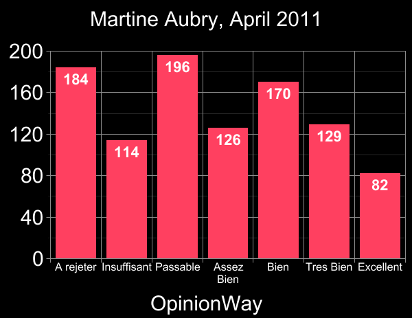

Why not 0-9? Or 0-100? Or 0-10? Or 0-5? Or -100 to +100?
Well, mathematically it does not really matter very much which one you choose:
In fact, if continuum real numbers are permitted
(which I prefer!), any range is
equivalent to any other – if voters rescale their votes to the new
range then the same winner will be elected, and the same ordering
of the 1st place, 2nd place, 3rd place... winners will occur.
So the only reasons to prefer one range choice over another are related
to human psychology or to inaccuracy due to "roundoff errors."
And in fact 0-9 might be superior to 0-99 initially (because it is more convenient
for use on more-primitive voting machines) even though ultimately, once
good-enough voting
machines get common enough, we would prefer 0-99 for more accuracy.
Warning – Revised views:
See this newer page for a survey of the psychometric
and market-research experimental science literature about rating scales, which
instead recommends a 10-level scale as apparently "best."
But the present page, which is older and was largely unaware of that literature,
recommended 0-99, for the following reasons:
In the range-voting test election
we conducted
in conjunction with the
US presidential election of 2004
using voters exiting from polls
(see paper #82
here)
we used the range 0-100. That turned out to be a bad idea because
some people thought the votes should add up to 100
rather than the truth: each vote is
arbitrary within the full range and you can give several candidates
full-100 scores simultaneously if you want.
(100 is automagically pre-associated
in some people's minds with "percentages" and the notion they all have to
sum to 100. Even though the instructions refute that, about 5% of the people
don't bother reading that part of the instructions because it is "obvious"
that things sum to 100 – they heard that in grade-school.
In our study we pollsters were there to nip that error in the bud, but in a real voting
situation we would not be there.
)
With 0-99 this psychological sum-bugaboo of "100" is avoided,
and we also get the nice feature that everything is a 2-digit number and that every 2-digit
number is a valid score (unlike, say, if it were 0-97).
Usability issues favoring 0-9 & 0-99 over 0-10 & 0-100:
The fewer digit slots for 0-99 instead of 0-100, or for 0-9 versus 0-10, means:
fewer voter-errors, fewer illegible scores,
fewer invalid ballots, less fraud, no opportunity to screw up by
entering "407" or "-89" into the three digit slots for an 0-100 range,
(with 0-9, every way to enter digits yields a valid vote),
easier & less error prone to enter data into hand calculators,
easier to build voting machines,
more compatible with blind/disabled voters, etc.
Although 0-10 (Olympics Actually since Olympics use 0.1 increments, it
is really equivalent to 0-100 for integer scores)
and 0-100 (Schools) admittedly seem the most familiar to people,
we do not believe the transition to 0-9 or 0-99 will cause anybody any difficulty.
It has been suggested 0-10 be used – with 0.1
increments for those needing more precision. (The idea of rating somebody 9.9 out of 10 also
seems familiar.) However, the "dot" perhaps
could cause problems for visually-impaired or math-challenged people.
To see what we mean about 0-100 being more conducive to fraud than 0-99,
consider some voter who fills in the three slots with "*97" where * denotes a blank.
Some fraudster could then invalidate that vote by filling
in the blank with a 1 converting it to "197," an illegal vote.
To repair that problem we could demand that voters write an "X" for the * to prevent that,
but many would not – leading to more problems (are those votes invalid too?).
And some voters might fill in the * with a "–" (I often do that to fill in blank spaces
on cheques), which could then be interpreted as a minus sign, again invalidating the ballot.
Why invite all those problems?
It is better to take the advice of
the wise old karate master
in the movie The Karate Kid. "Best block," he explained, "is not be there."
Which numerical rating scales have pro pollsters used for rating politicians?:
I searched the ORS's international historical poll database
of over 600,000 poll-questions. The following score-ranges were used in questions
seeking ratings of politicians:
Score range
1-4
1-7
0-100
1-5
1-100
1-10
0-10
ABCDF
ABCDEF
Popularity
445
880
285
2700
64
1062
829
586
3
but, apparently, no others. [Here "popularity" is a very crude estimate based on
"hit count" in a separate too-simplistic automated search among both political and
non-political polls.]
No polls were found using negative numbers. I did not investigate
(≤3)-level scales, but
tried every reasonable possibility 0-to-X and 1-to-X with 4 or more
levels, also tried "negative X to Y" and "minus X to Y." There also were
many nonnumerical verbal scales like "negative view, neutral, positive
view" and "favorable, unfavorable" most of which were "both-signed," so in that
sense negative numbers happened. Also other numerical scales besides those tabulated above
were used for rating things other than "overall quality of politicians."
What people want – the data:
In the 2004 test election, about 25% of our voters
employed only 100 and 0 (and/or intentional blanks);
about 40% instead employed other
multiples of 10 (such as 60) and blanks
in their votes; about 30% also employed multiples of 5 (such as 75); and the remaining 5%
used other numbers like 1, 2, or 73 somewhere in their votes.
We conclude from that that while 25%
of real world voters felt that
the range 0-1 (i.e. just two levels)
would have been enough expressiveness for them (at least in this election);
40% felt they needed the range 0-10,
30% felt they needed the range 0-20, and 5% seemed to want to
express very slight or precise
preferences and hence wanted the full 2-digit range 0-99.
Martine Aubry in France 2011 shows at least 7 score levels really are desirable:
A score-voting-style poll,
using a 7-level verbal scale (of 1000 random
French adults, telephone) by the professional
polling agency OpinionWay, was conducted in April 2011
concerning the upcoming (April 2012) presidential election. The frontrunning presidential
prospect at that time,
Martine Aubry,
was found to have the following score-distribution
(at left):

Note Aubry's distribution has 3 peaks and 3 valleys.
Every one of those peaks and valleys is statistically
significant
with ≥99.5% confidence for each.
In other words, the voters in this case were telling us that they wanted at
least 7 scale levels. With fewer, this peak and valley structure, which was genuine,
would have been obliterated. In contrast Chevenement and Le Pen had less interesting
distributions.
The Psychometricians speak:
According to chapter 14 (on ratings) of
Jum C. Nunnally's book Psychometric theory (2nd ed. McGraw-Hill 1978),
many studies show that "increasing the number of points
in the scale monotonically increases 'reliability'
up to at least 20 points"; albeit after 11 points the
gain becomes small.
Joy Paul Guilford (Psychometric Methods McGraw Hill, 2nd ed, 1954)
in chapter 11 ("rating scales") after examining numerous studies,
some using only 2 points on the scale,
others 21, others in between, concludes that a 7-point scale is
"usually lower than optimal" and "it may pay in some
favorable situations to use as many as 25 scale divisions."
Guilford also notes (this is the opening sentence of his chapter on ratings)
Of all the psychological measurement methods that depend upon
human judgment, rating scale procedures exceed them all for popularity
and use.
Here's a list of other claims about ratings made in these two books:
Numerical scales are better than non-numeric.
In most cases there is a slight advantage in having
an even number of points on the scale rather than an odd number.
Negative numbers are not recommended.
Graphical scales from left to right should be at least 5 inches
long and all oriented the same direction (rightward=better).
"Good raters are not necessarily self-consistent
nor are self-consistent raters necessarily good."
Women tend to give lower ratings than men.
The distinctness issue:
Some voters want to make all of (or many of) the candidates have different scores.
Of course, they are allowed, in range voting, to award equal scores, but
some voters may fail to realize that, or just want always to indicate a preference by making
the scores be unequal. For voters who want to do this,
having only a small range like
0-9 or 0-10 as allowed scores would either be inadequate
or at least would force a
lot of distortion in those scores. With 0-99 or (especially) 0-999: problem solved.
Tied elections:
The larger the score-range, the less likelihood of a tied election.
The Olympics uses 0-100 range voting. (Well, 0-10 with stepsize=0.1, which
is equivalent to 0-100; and the Olympics also currently eliminates the two
outlier judges
from each count.) Also, 0-100 scores are common in academia.
We submit to you that there is a reason they
chose 0-100 and not 0-10, i.e. that extra precision was important to
make the Olympics work well. Indeed the earliest Olympics used smaller ranges like 0-20
and the fact those small ranges later were abandoned evidently indicates they were
felt insufficient.
Computer simulations of 10-candidate elections
show that the range 0-10 is not large enough,
in the sense that in 4-to-10% of the test elections, the "roundoff error" inherent in
forcing range voters to use single digit range voting (range only 0-9) causes
the election winner to differ.
[Later note: Other people have done similar computer simulations independently, some of them
in published scientific papers, and reached similar conclusions.]
While we admit these computer simulations (with random numbers as votes!) were
somewhat artificial, this seems a good reason to worry that 1-digit
range voting is significantly worse quality than it needs to be –
so we recommend going to 2-digit range voting. Still, single-digit range voting
(range 0-9) is a good first step, and even "approval voting"
(which is range with the smallest possible
integer range 0-1; you either "approve" or "disapprove"
of each candidate) is a good first step.
Starting at 0 is better
than starting at +1, or any other nonzero value. Because:
Different ranges like 0-9 and 0-99 can be made compatible by
rescaling by multiplying (by 11 in this case).
But if the ranges started at any nonzero value,
then a linear transformation more complicated than a multiplication
would be needed.
That would be bad.
Another reason: A common usage of numbers is that number
1 is best, #2 is second best, etc. But in range voting, the lowest score is worst.
Confusion about that would be very bad!
We avoid it by starting at zero.
Still another reason:
starting at zero better enables a possible future switch
to the "reweighted range voting"
proportional representation system.
Negative numbers such as in the range -100 to +100 would
be a bad idea.
That would lead to more
voter confusion. (Imagine if some voter went for -100 instead of +100
by accident! Not good.) With partly-negative ranges, there is
more chance for mis-entered and illegible data, and
more likely to lead to voters wasting half their votes by only using the
positive end of the scale, and harder on blind/disabled, and less familiar;
and there seem to be no benefits compensating for these disadvantages.
(Here's a strange psychological effect: Range voters like to award the score 0.
It is the most popular score. If we make the range -10 to +10, however, then
do range voters now like to award "-10"?No! Zero is still
the most popular score.)
A really stupid usability point for 0-99:
Brian Olson had a -10 to +10 scale on his computerized internet voting
system betterpolls.com
for a while and
reported: "someone didn't see the minus sign and asked how they vote on a 10 to 10
scale. Is 10 good or is 10 bad?"
Robert J. Richard contends that ranges without an exact midpoint
are better:
"Another reason for this is based on experience in public opinion
research. Scales with an exact midpoint (0 to 10) encourage people to
pick the midpoint to avoid committing themselves. Scales with an even
number of choices (0 to 9, or 1 to 10), i.e. without midpoints,
force people come down on one side
or the other, even if only slightly.
Back when I was involved in questionnaire design, researchers had pretty
much settled on the format, "On a scale from 1 to 10, how would you rate
X?"
Michael Poole contends that 0-99 may cause voters to "put more thought into scores" than 0-100.
Honeybees
employ a large range in their elections.
It is not known how great honeybee-voting-precision is,
but it is safe to say they use
at least a 10-point scale and not more than a 100,000-point scale.
(Honeybees have
precise built-in clocks that they use to do sun-based navigation; they describe
directions to each other relative to the sun and automatically mentally update directions
as the sun moves across the sky.)
A contrary argument for 0-5 score-range (Ted at Dodecatheon media)
You can make the following simple interpretation (as in the
example of the exit polling following the French elections):
5 = Excellent 4 = Very Good 3 = Good
2 = Acceptable 1 = Poor 0 = Reject
The score is easily convertible to "percentage": just
multiply by 20. Yes, any scale can be converted, but
multiplying by 1.0101... to convert 0-99 to percentage would
probably be more confusing.
You can fit 7 bubbles for 0 through 5 plus No Opinion easily on one
line of an optical scan ballot, even in 2-column format.
0-5 is already in moderately wide use (number of "stars" for movie and recipe ratings)...
although usually that is 1-5, with "zero stars" forbidden.
This scale also sends an implicit message that a candidate winning
with 40% or more average score is viewed as "acceptable" by the
population. (I don't know whether that's a good or bad thing.)
Unfortunately, 0-to-5 does not offer very fine discrimination.
A contrary argument for {-1, 0, +1} score-set (Professor Brian W. Goldman)
1. Minimum possible number of options before it reverts back to approval
voting, making it the easiest range voting system to implement using
existing voting machines.
2. Values can be expressly mapped to words like "Reject", "Neutral", and
"Approve" to get rid of the negative value problem, as voters would be hard
pressed to mistakenly mark "Reject" where they mean "Approve."
3. Third parties get all the benefits of normal approval voting, and
because of the "Neutral" value, third party candidates will likely be less
"Reject"ed than the less liked major party. This is especially true in
gerrymandered districts where a large number of voters are going to default
vote for one major party, against the other, and likely be in the middle
about third party candidates. As such this should still allow for
the nursery effect.
I admit {-1, 0, +1} doesn't have the same discriminatory power of larger ranges, but
it feels easier to implement, with less change from our existing voting
system. It achieves many of the goals desired in Range Voting, even if it
doesn't have quite the same power.
Which scale do voters like? Poll-based answers
French voters in an exit poll study (see this)
preferred both 3-point scales
{-1, 0, +1} and {0, 1, 2} (about
equally) over {0, 1} (approval voting).
However, they disliked the 21-point scale
{0, 1, 2, ..., 19, 20}.
The authors of that poll study conjectured (without explicit evidence) that {-2, -1, 0, +1, +2}
would be even more popular. Untested were {0, 1, 2, ..., 8, 9} and {0, 1, 2, 3, ..., 98, 99}.
Other reduced ranges (coarser than 0-to-99)
We do recommend the reduced range 0-9 ("single digit range voting")
or even 0-1 ("approval voting") as stopgap measures
more suitable for some of today's voting
machines. (The cost of building and buying new voting machines is extremely tiny compared
to the benefits Range Voting will bring us, but at first of course we want to
use today's machines.)
In that case, districts using 0-9 would have to rescale their vote totals by
multiplication by 11 when used in combination with other more modern districts using
the full 0-99 range. Similarly approval-voting districts using the 0-1 range would
need to rescale their totals by multiplying by 99. But it is important that these
be only stopgap measures, i.e. that the granularity be required to be above
some floor which keeps rising with time until at some known point it reaches 99.
That is because the net effect would be a somewhat
unfair system if different granularities were
used in different places – one of the places would probably effectively
have less political clout. The clout-unfairness would be pretty minor
with a mixture of 0-99 and 0-9 districts, but might be pretty major with a mixture
of 0-1 with 0-99 or 0-9 districts, so we recommend avoiding the latter mixture.
About this unfairness:
It should be mandated to go away after the end of a specified transition period –
all machines would be required to upgrade to 0-99 (or 0-9999, or whatever the maximum was)
uniformly by the end of that period.
It would be a small unfairness. Certainly less than 5% and probably well below that.
This is far below the unfairness levels that
happened in 2000 in Duval County Florida due
to differing policies in different locations about rejected ballots – the
most pro-Gore districts
had 20% rejection rate, the most pro-Bush had below 3%. We would prefer that
it be mandated that voting machines be assigned randomly to
districts. And random means random.
The voters in 0-9
districts would be motivated to upgrade to 0-99 because that way they
would have more voting options (all the ones they had before, plus more)
which presumably gives them more power (or anyhow cannot hurt).
Although this unfairness is bad, it would not be as bad as keeping everything at 0-9
forever. (The numbers show that would lead to more damage.)